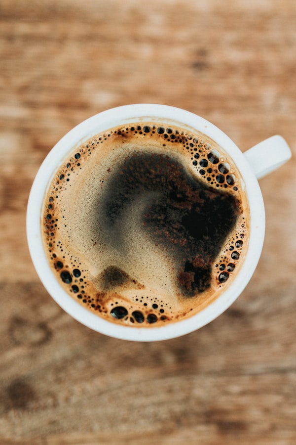

El Pasado
Cómo convertimos el tiempo en nuestra materia prima.
No empezamos con prisa
Todo comenzó en un pequeño garaje en 2010. No buscábamos revolucionar la industria, solo queríamos tomar una taza de café que supiera a café, y no a azúcar quemado.
2010
La Primera Tostadora
Compramos una vieja tostadora de 5kg restaurada. Pasamos noches enteras aprendiendo a escuchar el "crack" del grano y a entender el fuego.


2014
El Primer Viaje
Entendimos que tostar no era suficiente. Viajamos a Colombia por primera vez para conocer las manos que cultivaban nuestro grano. Allí cambió nuestra filosofía.
Hoy
Slow Coffee
Hoy somos un equipo obsesionado con la pausa. Creemos que cada taza es una oportunidad para detener el reloj y disfrutar del momento.